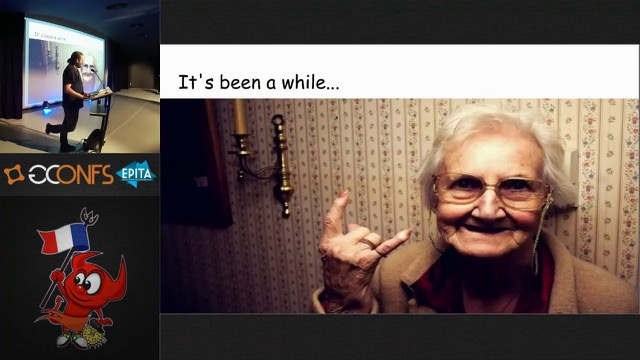
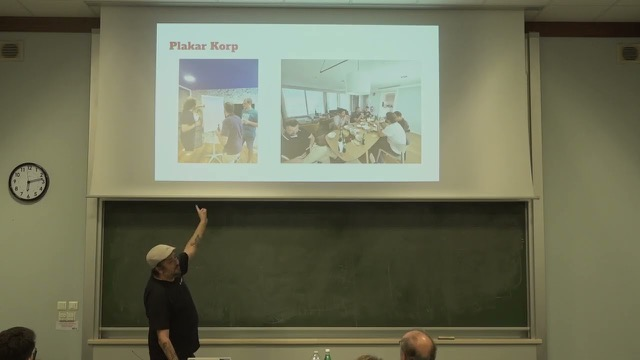
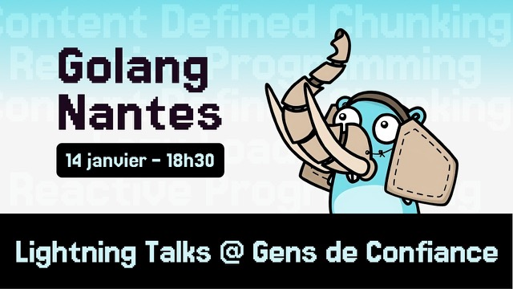
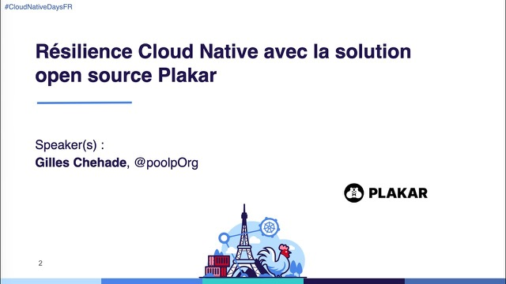
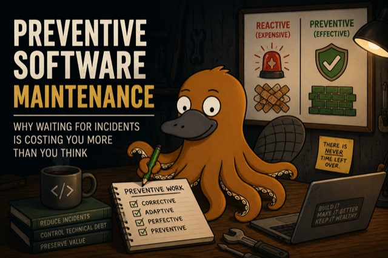
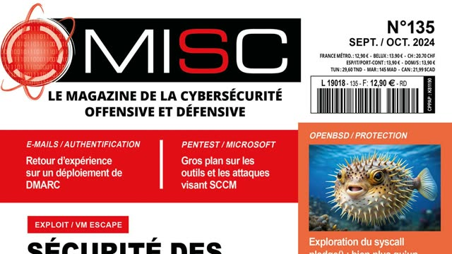
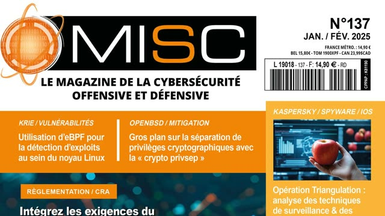
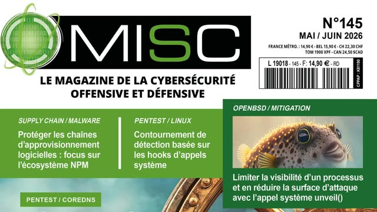

Audits and reviews
A one-day read or a multi-week audit, on the same principle: before you build, I read the design and point at what will break in production; once it runs, I read the system and explain why it breaks now. The scope is wider than code — the software, the infrastructure it runs on, and the workflows that produce both.
- Architecture design. The shape of the system — boundaries, data flow, what happens when it grows.
- Infrastructure design. The ground under the software — topology, failure domains, what pages someone at night.
- Reliability and fail-safe design. How the system degrades, how it recovers, what it refuses to lose.
- APIs and hygiene. Contracts, versioning, dependencies, build.
- Workflows and processes. How the work happens — reviews, releases, incident response, and where AI sits in it.
- Security. Exposure, secrets, and how a vulnerability report reaches you.
Most of the evidence is public. OpenSMTPD ships in the OpenBSD base system since 2013 and parses hostile input on port 25 for a living. At Plakar I work on kloset, a content-addressable backup engine. The rest ran in production behind NDAs — payment and mail systems at Veepee and Dalenys, PCI-DSS included. Read the code before you read this page.
Technical due diligence
For funds and acquirers, pre-seed through Series B, on infrastructure, developer tools and open source. The question is not whether the code is clean. It is whether the codebase matches the story in the deck, and whether the team could rebuild what they are demoing.
It now includes a newer question: how much of this was generated rather than engineered — and whether anyone on the team can still tell the difference.
The team gets read too, not just the repository. I studied occupational psychology for seven years at CNAM; half of a diligence is people — who holds the knowledge, and what leaves when they do.
One to five days of work, sized to the deal. The deliverable is one written memo: what exists, what is fragile, what a fix would cost. Under NDA. Conflicts are declared up front — name the target in your first mail so they can be checked before anything is signed.
Mail infrastructure
I wrote OpenSMTPD, the mail server that ships in the OpenBSD base system. If your problem involves SMTP, you are talking to someone who implemented it. At Dalenys I ran the other side too: a distributed e-mail router and its deliverability to the main French and US ISPs.
- Review. An existing mail setup read end to end — topology, queues, filtering, TLS.
- Migration. Off hosted mail, onto servers you control.
- Deliverability. SPF, DKIM, DMARC, IP reputation, and why your invoices land in spam.
- Post-incident forensics. Headers, logs and queues, after a compromise or a loss.
AI in the workflow
AI is the best ally or the worst enemy of an engineering team, depending entirely on how it is used. Used well, the productivity gains are real and large. Used carelessly, it quietly lowers the value of the project.
The failure modes are specific: critical paths written with poor judgment however well they were specified, data handled without care, a team's understanding thinning to the macro view — until the code cannot be maintained and an incident lands with nobody knowing where to look.
I use these tools every day and hold no ideology about them. The work is concrete: take an existing workflow, decide where a model helps and where it has no business, put review where it belongs, and measure the result — neither buying the hype nor underusing what works.
Talks, articles, podcasts
The public record, if you want to run your own due diligence on me.
-

Talk · EuroBSDCon · 2017 OpenSMTPD, current state of affairs - Podcast · FLOSS Weekly 543 · 2019 OpenSMTPD
-

Talk · Capitole du Libre · 2025 Plakar : moteur de sauvegarde immuable, vérifiable et distribuable -

Talk · Golang Nantes · 2026 Content-defined chunking — lightning talk -

Talk · Cloud Native Days France · 2026 La résilience Cloud Native avec la solution open source Plakar - Podcast · Bret Fisher · 2026 Backup S3, Google Drive, iCloud, Notion with Plakar
- Podcast · À la french · 2026 Ils ont effacé la prod ! Histoires vécues de backup, rançons et clouds défaillants
- Podcast · Certo Modo Reliability Rebels — episode 15
-

Article · poolp.org · 2026 Preventive software maintenance -

Print · MISC magazine Réduire la surface d'attaque avec pledge(2) -

Print · MISC magazine Sécuriser les clés privées avec la séparation de privilèges cryptographiques -

Print · MISC magazine Dévoiler son système de fichiers avec unveil(2)
Engagements
I am CTO of Plakar, full time. Consulting fits around that, which is why the formats are short and defined: a scoped start, a scoped end, a written result. The practice is not new: I freelanced on the same work from 2019 to 2024, under NDA.
Advisory is the one recurring format: a monthly block of hours for the questions that do not justify an audit — a design to sanity-check, a hire to interview, an incident to read.
- Architecture review one day · €1,200–1,500
- Audit two to three weeks · €900–1,200 per day
- Due diligence one to five days · €1,400–1,800 per day
- Advisory monthly, capped hours · €2,000–3,000 per month
Rates exclusive of VAT. Fixed quote before work starts.
What I don't take on
- Backup and storage products. That is the day job at Plakar. It is not for sale here.
- Staff augmentation. I do not join your team, your standups or your sprint board.
- Anything with a conflict of interest. Targets and clients are checked against each other before an NDA is signed. When in doubt, I decline.
Contact
One mail is enough: the system, the decision it blocks, the deadline. For due diligence, name the target — conflicts are checked before anything else is discussed.